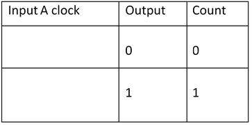

Design and implement modulo 'N' counter using IC7490 (N=100 max).
IC 7490 is a TTL MSI (medium scale integration) decade counter. It contains 4 master slave flip flops internally connected to provide MOD-2 i.e. divide by 2 and MOD-5 i.e. divide by 5 counter. MOD-2 and Mod-5 counters can be used independently or in cascading.
It is a 4-bit ripple type decade counter. The device consists of 4-master slave flip flops internally connected to provide a divide by two and divide by 5 sections. Each section has a separate clock i/p to initiate state changes of the counter on the high to low clock transition.
Since the o/p from the divide by 2 section is not internally connected to the succeeding stages. The device may be operated in various counting modes. In a BCD counter, the CP1 input must be externally connected to QA o/p. The CP0 i/p receives the incoming count producing a BCD count sequence.
It is also provided with additional gating to provide a divide by 2 counter and binary counter for which the count cycle length is divide by 5. The device may be operated in various counting modes.
There are 2 resets i/ps R0 (1) and R0 (2) both of which need to be connected to the ‘logic 1’ for clearing all flip flops. Two set i/ps Rg(1) and Rg(2) when connected to logic are used for setting the counter to 1001 (BCD 9).
Pinout of IC 7490:
Function Table of MOD-2 counter:

Function Table of MOD-5 counter:
1] Design of MOD-10 counter using IC 7490:
The QA o/p the first flip flop is connected to the input B which is clock i/p of internal MOD- 5 ripple counter. Due to cascading of Mod-2 and Mod-5 counters, the overall configuration the decade counters count from 0000 to 1001. After 1001 mod-5 resets to 0000 and next count after 1001 is 0000.
When QA o/p is connected to B i/p, we have the Mod-2 counter followed by Mod-5 counter. The count sequence obtained is shown in the table. It may be noted that QA changes from 0 to 1 the state of Mod-5 counter doesn’t change, whereas when QA changes from 1 to 0 the Mod-5 counter goes to the next state.
Logic Diagram:
Funtion Table:
Timing Diagram:
2] Design of Mod-7 Counter using IC 7490:
Funtion Table:
Logic Diagram:
Timing Diagram:

3] Design of Mod-99 using IC 7490:
For Mod-99 two IC 7490’s will be required. Hence to implement a divide by 99 counters we have to use two decade counters IC’s. A divide by 99 counter counts 99 states from 0 to 98 and the counter should reset as soon as the count becomes 99. So in order to reset the counter of 99 connect the Q o/p which are equal to 1 in the count of 99 to an ‘And’ gate & then connect and o/p to the reset i/p of both IC’s.
Logic Diagram:
Follow the below steps
1. Connections were given as per circuit diagram.2. Logical inputs were given as per truth table.
3. Observe the logical output and verify with the truth tables.
Here you can embed an interactive simulation tool or provide links to simulation resources.
Q.1] What is an N-modulo asynchronous counter??
An N-modulo asynchronous counter, also known as a ripple counter, is a digital counter that counts from 0 to N-1 and then resets to 0. It is built using flip-flops, with the count progression triggered by the clock signal.
Q.2] How does an asynchronous counter differ from a synchronous counter?
In an asynchronous counter, the flip-flops do not receive the clock signal simultaneously. The first flip-flop receives the clock signal directly, and each subsequent flip-flop is clocked by the output of the previous flip-flop. In contrast, all flip-flops in a synchronous counter receive the clock signal at the same time.
Q.3] What are the advantages and disadvantages of asynchronous counters?
Advantages:
• Simple design and easy to implement.
• Requires fewer components compared to synchronous counters.
Disadvantages:
• Propagation delay due to the ripple effect as the clock signal is passed through the flip-flops sequentially.
• Slower operation speed compared to synchronous counters.
Q.4] What is propagation delay in an asynchronous counter?
Propagation delay is the time taken for the change in the input clock signal to propagate through each flip-flop in the counter. This delay accumulates as the clock signal is passed sequentially from one flip-flop to the next, causing the final output to be delayed.
Q.5] How can you implement a reset mechanism in an asynchronous counter?
A reset mechanism can be implemented using combinational logic gates (such as AND gates) to detect when the counter reaches the desired count NNN. When the counter reaches NNN, the reset signal is triggered, resetting all flip-flops to 0.
Q.6] What is the modulus of an asynchronous counter?
The modulus of an asynchronous counter is the number of unique states it cycles through before returning to the initial state. For an N-modulo counter, the modulus is NNN.
Q.7] Can you give an example of a Mod-10 asynchronous counter?
A Mod-10 asynchronous counter uses 4 flip-flops. The flip-flops are connected in series, with the clock input applied to the first flip-flop. The output of each flip-flop serves as the clock input for the next flip-flop. When the counter reaches 10 (1010 in binary), a reset logic resets all flip-flops to 0.
Q.8] Why are asynchronous counters also called ripple counters?
Asynchronous counters are called ripple counters because the clock signal ripples through the flip-flops sequentially. The output of one flip-flop serves as the clock input for the next, causing a ripple effect.
Q.9] What are some common applications of asynchronous counters?
Asynchronous counters are used in various applications, including:
• Digital clocks and timers.
• Frequency dividers.
• Digital event counters.
• Simple digital state machines.
• Debouncing circuits for mechanical switches.
- Reference 1: “Digital Fundamentals” by Floyd & Jain
- Reference 2: R. P. Jain, “Modern Digital Electronics”, 3rd Edition, Tata McGraw-Hill
- Reference 3: 3. Malvino, D.Leach“Digital Principles and Applications”, 5th edition, Tata McGraw- Hill